Travelogues: South Utah ('22)
Traveling to some number of the Mighty Five Utah national parks has been on our list for some time. We've always been concerned about visiting those parks in the summer because the heat can get to be extreme. Thankfully this year we found ourselves pushed to just give it a go.
The driver of this trip wasn't actually the destination, but rather a need to use some expiring airline miles. In 2020, at the beginning of the pandemic, we had to cancel a spring break trip to Florida at the last minute. When we did that the airline provided us with miles to use at a later date, which was a nice outcome all things considered.
It wasn't until over a year later that we finally booked those miles, picking the same Florida destination as a spring break trip. However, within a week of that booking we discovered a more affordable flight on the same airline. When we rebooked at nearly half the cost, we had miles back in our pocket to spend, but this time with more stipulations. These miles could be booked for any destination, but once we locked in that destination we could only modify the flights for that same destination. Switching destinations would mean losing these credits.
So for this booking we narrowed things down to destinations that would have flights on this (smallish) airline all year 'round. This would guarantee that if we decided not to do another vacation in 2022, we could kick the vacation down the road to a later date. Las Vegas is a place that always has flights, and it is the closest major airport to Zion National Park, so we booked it!
In the end we decided to not only keep that Vegas booking, but extend the schedule by a couple of days to allow us more time in Utah. We've done a lot of travel this year, but we were happy to make sure we got one more big family trip with our oldest daughter who is off to college in the fall. We were also thankful that we extended the trip. Even with the added days we could have still kept busy for a week longer.
If you're thinking of traveling to the national parks of southern Utah, I say you should do it. Perhaps this travelogue will help you in making your plans. If you'd like to talk, please feel free to email me!
Day 1: We Fly
We flew out of the sleepy Terminal 2 (née Humphrey Terminal) in Minneapolis. Our flight was originally to arrive in Las Vegas around noon, but the day prior it had already been pushed back a few hours. We were a bit anxious to be leaving Las Vegas (heh) during rush hour rather than sleepy noontime traffic. In the end it was all fine.
The flight went well. Our drive out included a stop at In-N-Out Burger, which none of us had ever been to. We don't generally like fast food as part of our vacations because it just kind of bogs you down. With a daughter who is a burger lover, though, we had to stop. We ordered animal style this and double-double that.
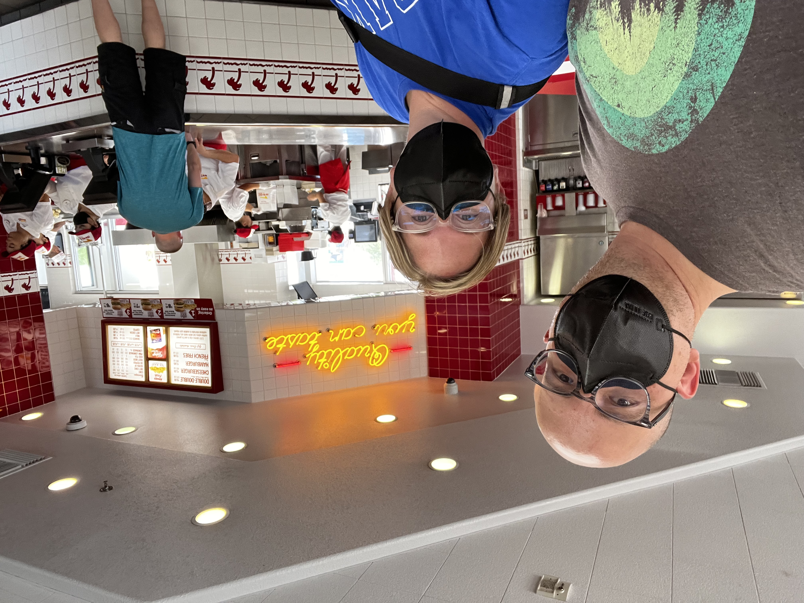
Our favorite part of the drive was cutting through the Virgin River Gorge. As we approached the Beaver Dam Mountains, I asked, "Where are we going?" I expected the interstate to continue north or northeast alongside the range, but I could not see any roadway ahead. We moved closer and I suggested, "Maybe we're going through the mountains?" Sure enough, that was the plan. I later learned the highway through this gorge was one of the most expensive ever built. Cliffs surrounded us and we occaisionally got a peek at the Virgin River, the waterway that also carved out most of our primary destination, Zion National Park. The walls of the gorge were spectacular, and a bit dizzying as the rock layers ran at a different angle than the road.
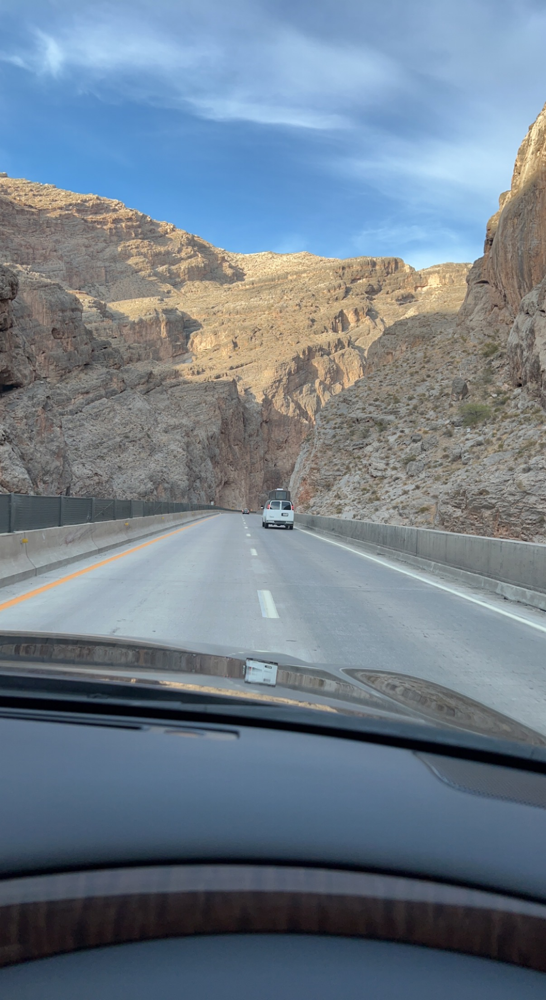
The drive to our homebase in Kanab, Utah, was three-and-a-half hours. With our delayed flight, it did mean we finished up in the dark, which always adds a touch of anxiety in a new place. Thankfully everything went fine. It was incredibly dark in Kanab as we drove through to find our rental home. Clearly they have some light pollution laws in effect.
Day 2: Dunes & Caves
We woke up at a reasonable time and loaded our bags with sandwiches, snacks, and water. Oh, the water! The two mantras for this trip were: Stay Hydrated and Start Early.
Starting early was useful in multiple ways. First, you could beat the crowds to some destinations. Zion especially gets lots of visitors, and the earlier you get on a trail, the less busy it is. I personally don't plan a trip to explore nature with a desire to explore it with 100 other people I don't know crowded around me. So, yes, I'm no morning person, but earlier was better on this trip.
Secondly, an early start meant you beat the weather. Beating the heat was the primary concern. As days rose into the 100 degree range, you would wish you had started earlier. Toward the end of our trip afternoon thunderstorms became a common occurrence. Getting up early helped you get in most of a day before the storms chased you back to cover.
Staying hydrated was critical. We traveled with a hydration backpack for each of us I know it can get expensive to do this for a family, but I would say it is a must for any trips with hikes longer than a mile or two. It allows you to pack the necessary amount of water in a way that carries much easier than bottles. And it allows you to drink from a convenient hose while hiking, avoiding the slow-downs of fumbling with grabbing water from your pack.
On this day we were starting light and local. Our destination was Coral Pink Sand Dunes State Park, just under thirty minutes from our homebase. Our plan was to hike on the dunes and perhaps rent a sled for a bizarre (to us northerners) sand sledding experience.
The environment was surreal, with these sand dunes nestled amongst the surrounding hills. We all sledded down at least once, with a couple of the girls trying twice. The walk up the large dunes was an incredible workout. Each of us felt some level of sick at some point. The heat and exercise certainly contributed, but I also think we weren't yet used to the altitude. It was a fun site to see, but don't plan on spending more than a couple of hours here.
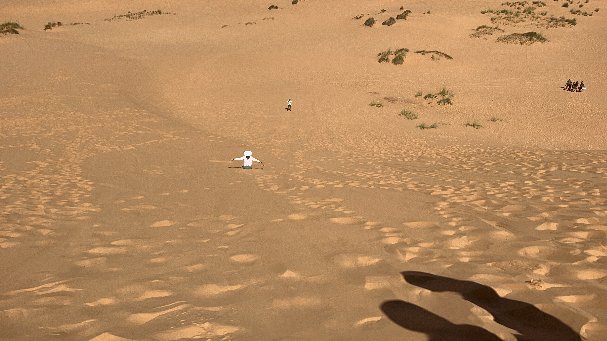
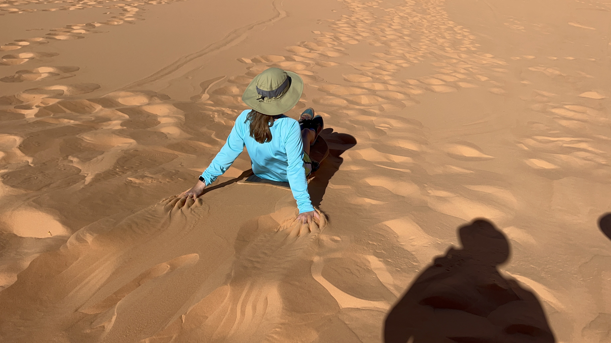
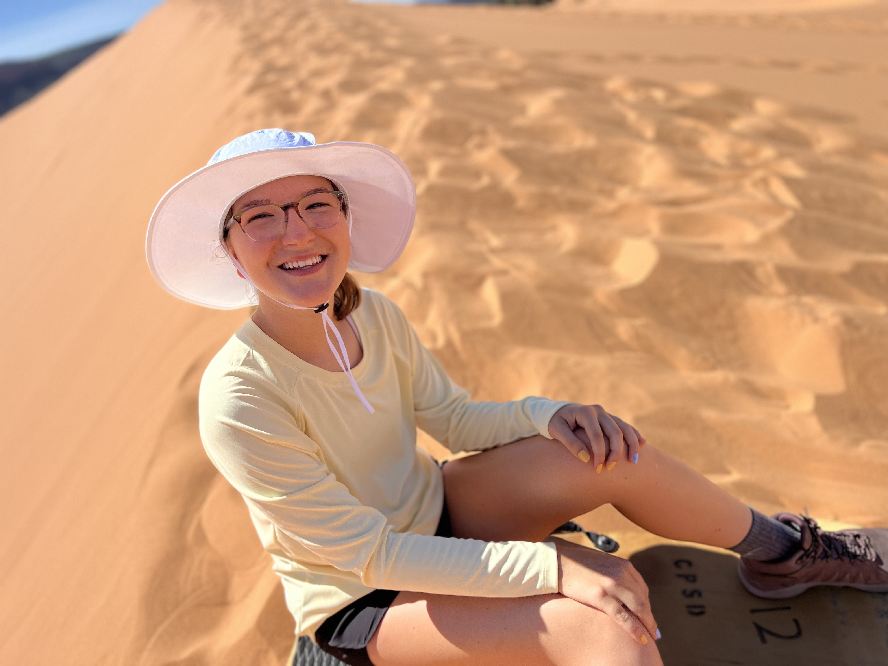
At one point I walked across the top of a dune away from the rest of the family. I could see that if I kept going I'd arrive where no one (today) had yet walked, though it turns out some other animals had found the place before me.
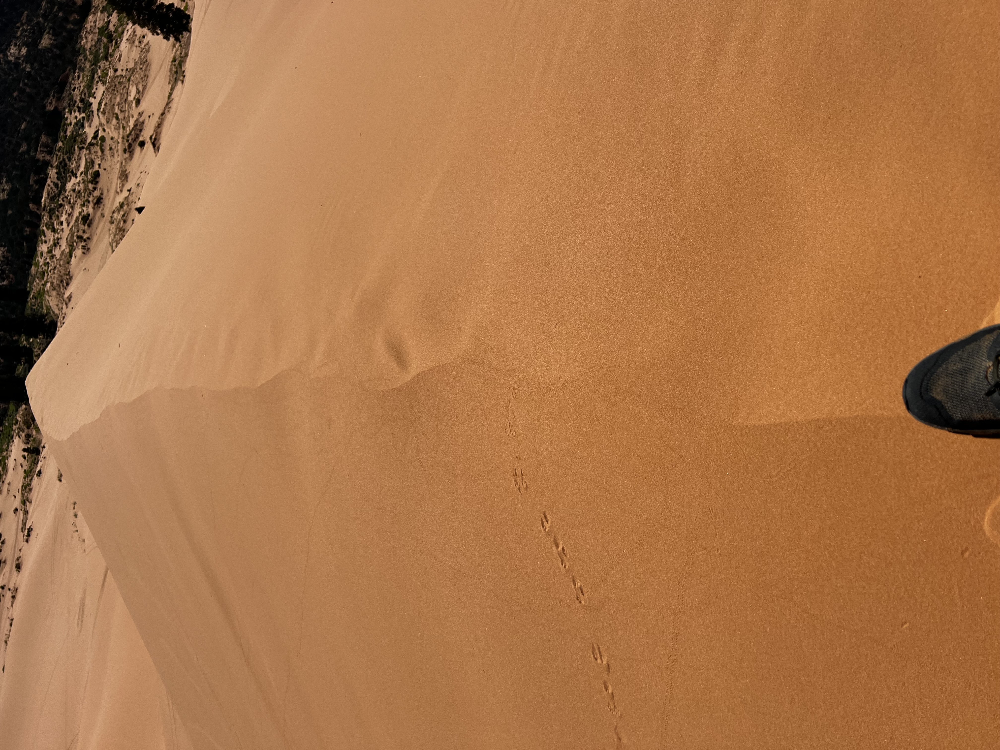
Next, we stopped at a couple of man-made destinations. The first of these was Belly of the Dragon. It's a pretty cool tunnel that only takes twenty or thirty minutes to explore. It's worth quick stop if it's on your way.

Finally we wanted to explore Sand Caves, which I believe are remains of a glass mining operation. We set out from the parking lot, which is a mile or so south of Moqui Cave, which I mention because we weren't sure at the time if you hiked from Moqui or some other place. Sand Caves does have it's own parking lot. You set off from this parking lot back north for a supposed half-mile hike before ascending toward the caves.
This became an adventure beyond what we expected. The day had gotten easily over 100 degrees and we were getting quite hot. We had plenty of water and snacks, but the half-mile sure felt longer than that. The trail kept going and going, closer to the mountain where the caves were carved, then farther away, then back. We had passed the caves and figuerd we would find a gradual climb ahead to get back to them.
And we did find that gradual climb! It had to be nearly a mile from where we started, however, so it didn't feel right. We climbed up a bit and started following a trail back to the south. We met some other hikers who said, "Don't go that way unless you want to cling to the side of a mountain to get to the caves." Okay! So we found an even higher route and kept walking. Until we were above the caves, which were maybe 1,000 feet in front of us. So we found a scramble down, and it wasn't the most comfortable way to get there. We did get there, though!

As we left the caves to find our way back to parking, we watched some other hikers climb down the side of the mountain on bare rock. We also met some hikers and asked how they had gotten up – bare rock was their path as well. It turns out we had just walked right past a fairly steep climb up rock to a trail that was veritcally level with the caves. Our exit followed this "path," though it was challenging to find a way down that felt safe.
That turned out to be enough adventure for us for the day. Back to homebase for dinner and rest.
Day 3: Zion Proper
In the weeks leading up to this trip we had decided to attempt hiking The Subway. This is a permitted hike. I cannot tell how many people are permitted to the hike each day, but it seems to be well under 100. We hadn't planned far enough in advance and missed the two-month advance lottery. So just before departure and as we arrived on our vacation, I was signing us up for the daily lottery that is used to distributed the remaining twenty group hiking openings.
We were fortunate enough to win the lottery eventually, securing entry to The Subway for day four (Saturday). The downside is, as much as I had begged, you must visit a park ranger at one of the two visitors centers in order to procure your permit. I had read horror stories about the lengthy traffic delays on the switchback roads within the park. But there was no going around it, so in we went planning to have most of our day be sitting in the car and looking at the surroundings.

Entering the park from the east, we were greeted with spectacular views early and often, quickly making our way past Checkerboard Mesa. We left our homebase early enough that we hoped to beat the crowds to the Canyon Overlook Trail, which would be a fairly easy trek to a nice view. We got lucky and grabbed one of the last parking spots on the north side of the road just before the east tunnel. Up we went!
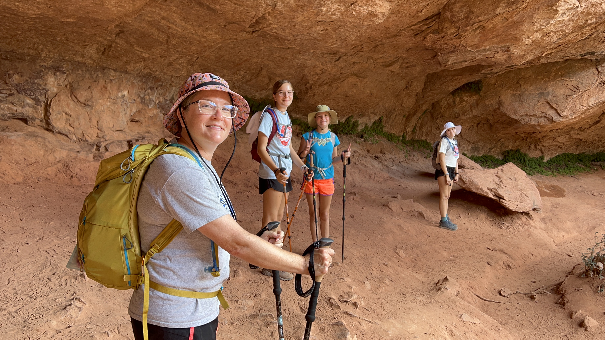

The view was something else!
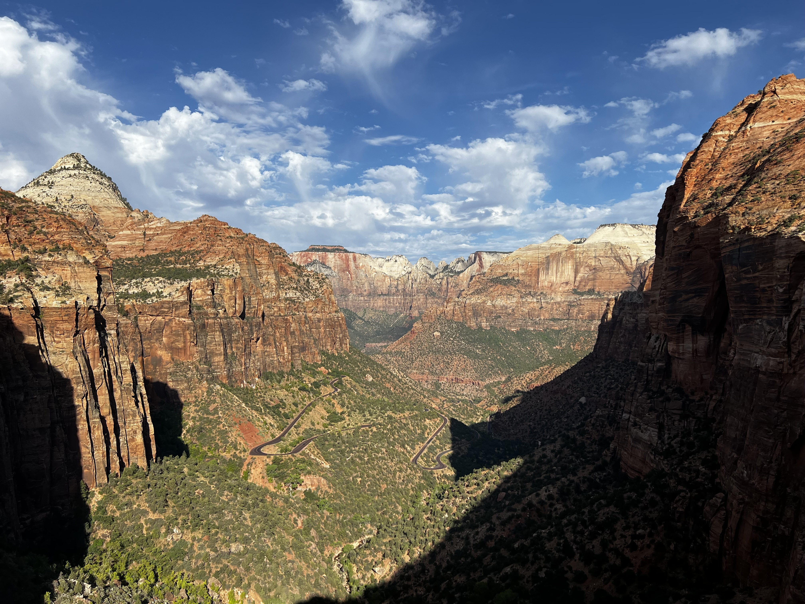

Next we travelled through the cool, mile-long eastern tunnel. We arrived at the dreaded switchback road and... it was fine! Traffic was not a problem at all, rendering my pre-worrying moot. I must keep reminding myself to be prepared for such things, but don't worry about them until it's necessary. The only problem here was keeping the vehicle on the road while craning our heads looking at all the gorgeous views.
At the main visitors center more luck found us when we grabbed a parking spot right up front as someone else was leaving. It looked to me like the parking lot was actually full, so we certainly were fortunate. I went to pick up our Subway permit while the rest of the family hung out in the vehicle and ate lunch. We figured we'd depart for a hike elsewhere in the park after this work was done.
I walked right up to the ranger window and had a nice fifteen minute talk with the ranger. I learned that the reason for an in-person pick up was certainly so the ranger could size up our group and determine how much they should encourage us not to go on the hike. We talked about water needs, flash flooding, temperatures, solid waste plans, and so much more. I needed to sign off on a paper that again reitrated all the requirements and risks of the hike.
Leaving that meeting, I looked over at the shuttle line and I was surprised. In the summer, the main north-south road through Zion is not driveable for those entering the park for day use. A shuttle system is used to transport folks up the canyon to famous hikes like Angels Landing and The Narrows I had read horror stories, similar to those about the switchback road, that this line to board the shuttle could be hours long. Yet what I saw was hardly a line at all. People seemed to be walking right on to the shuttle.
So our plans changed. Rather than driving out of the park proper and trying the East Mesa Trail, which seemed like a pretty big hike to do right before Subway, we decided to hop on the shuttle. While we were not prepared to go on The Narrows hike, we did have chacos and felt like maybe we could do a little bit of the walk-through-water.
So ride we did. The shuttle was fully-seated, with standing-room-only being used for a couple stops. Not too long after boarding we arrived at the human zoo that is The Zion Narrows.
I think we were all very glad to be able to visit this cool hike through cool water. It's a bit of a walk before you enter the water, and there are lots of people on the trail. Chacos are not the appropriate footwear as they slow you down (they catch water like a sail as you wade) and they require you to be very cautious with the large rocks unseen below your feet. I think we all would like to visit that hike with the appropriate time available and gear rented. Once we hit the water, we probably hiked in for about an hour. It was really amazing and we can imagine it gets even more amazing as you go further up the narrowing canyon to escape the less-committed hikers.


With a 3:45 A.M. wakeup call for the next day, we packed it in fairly early. We drove back to our homebase, loaded up our packs for the morning, and retired for some much-needed sleep.
Day 4: The Subway
It was finally time to hike The Subway. I had done loads of preparation for this day, including educating the kids about what would all be involved in the hike:
- There would be constant pathfinding – this wasn’t just walking down a trail
- We would each be carrying at least four liters of water, along with loads of food and other supplies
- Even in the heat, long-sleeved synthetic shirts would feel cooler as they allowed airflow and kept more skin covered from the sun
- Food would not be about our tastes, but rather fuel for moving our bodies – we couldn’t be picky
- Sometimes concentration would be very important
The alarm sounded promptly at 3:45am. The night before we had prepared our packs, our water, and our emergency supplies, so it was a matter of waking ourselves up and hitting the road. Our early departure was in large part due to the temperatures, which were expected to be over 100 degrees on that day. The more hiking we could get done before the afternoon, the better. Our drive was about ninety minutes, mostly in the dark. Eventually our SUV climbed up the hills in a southwest approach to the park, meeting the sunrise at the parking lot.
Donning our packs, hats, and trekking poles, we headed off down the trail toward the cliff face we would be descending on switchback, scramble-y terrain. It was over half a mile to get to the descent. At this point we reordered our group. Typically I lead and my wife takes up the tail end, often with our eldest daughter just in front of her. What we learned earlier on this trip is that for slide-y, dangerous terrain our eldest did not enjoy hiking next to my wife. It seems my wife makes unconscious “concerned” and grunting noises in these situations, which raises our daughter’s anxiety. So realign we did.
Even though we realized that coming back up this cliff at the end of the day would be much harder, we believed the descent would be more anxious as going down on loose gravel can often be stressful. We took our time and made our way, helping each other out and maintaining our focus. At the bottom we grabbed a snack and made sure to mark our entry to the stream valley as I had read that many people miss the exit when they are wearily making their way out. There was a sign right as we landed on flatter ground, but it wasn’t visible from the stream down the way.
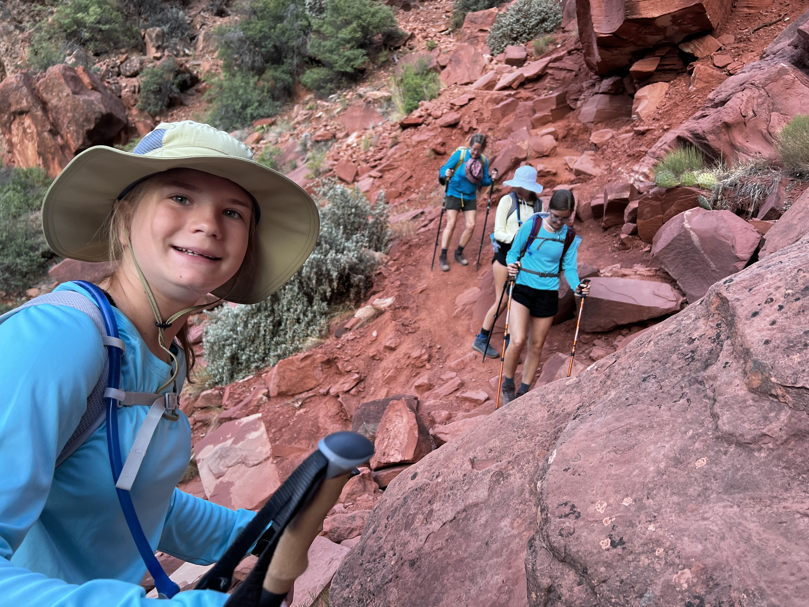
Off we went to follow the stream toward the canyon. Realizing that they’d be few and far between, I pushed us pretty hard when we hit a flat area with clear trails. Soon enough we arrived at the stream and had to start thinking.
Hikes like this are surprising the first time you go on them. They require consistent pace, climbing, dropping down, and obstacle avoidance. That’s all work to be prepared for, but what you don’t realize until the first time you do it is how much mental effort you will expend on the trail. Figuring out how to get past an obstacle one time is not tiring. Avoiding stepping in a deep puddle one time is not tiring. Repeating this process over and over for hours takes a toll on your brain and thus your energy. It is fun, though, even if it’s a type 2 fun.
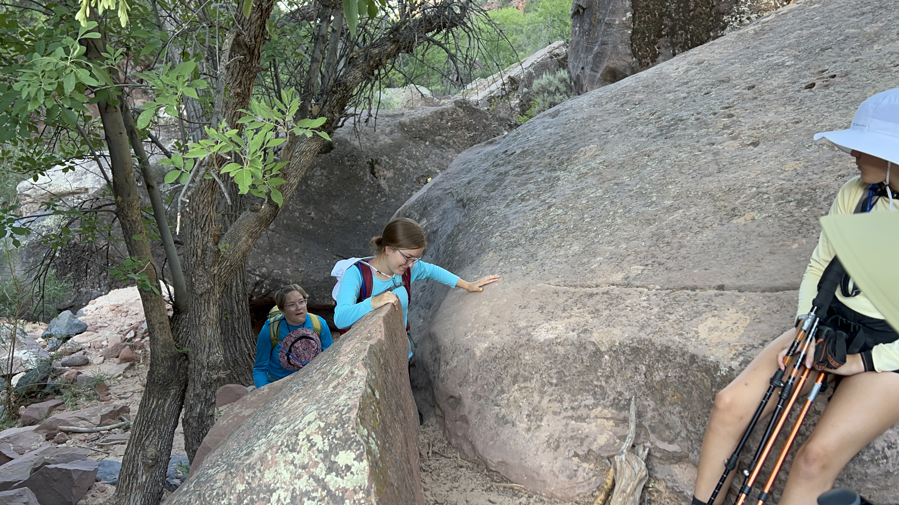
Oh, and as to avoiding those puddles? Water proof hiking footwear and trekking poles help immensely in this regard. My wife and I went on a similar hike in Hawaii once where we had none of this gear (nor enough water 👎). The trail was wet for about four hours of the hike, and trying to avoid getting our socks wet in our running shoes was a grueling experience.
The hike along the stream and the trail finding in itself was an enjoyable walk/climb/jump. It was pretty. There was often sand along the stream, which arrived over the millennia via the sandstone cliffs around us. The sand was also a way-finding tool. When you weren’t sure where to go, you would often see sand littering a boulder ledge, tracked there by others prior as they made their way over an obstacle.

Due to the layout of the slowly narrowing canyon and the polite clouds, the morning found us shaded throughout. We felt that we were making good time, but looking at our location on the trail map on my phone sure made it seem like we weren’t so fast after all. We were hoping to get to our destination in three to four hours, and we were taking all of that time.

Finally we arrived at the surreal, cascading waterfalls that we knew would lead to the Subway entrance. Cascades such as these were something we had never seen before and we took our time making our way up them. Finding a gradual path was important up these slippery slopes. I found the bowl-shaped erosion directly downstream from a horizontal waterfall (a deep crack where most of the stream’s water diverts for thirty yards) to be particularly mesmerizing.


And then the Subway entrance loomed. Our two youngest daughters had moved ahead of us at this point as we all explored the area at our own pace. I was last in and snapped pictures all the way. It was a surreal, entirely unique, and, on this hot day, a wonderfully temperate destination.

Once we got into The Subway, we found a dry spot to set down our packs and grab some lunch. Peanut butter and jelly never tasted so good! We swapped our hiking boots for Chaco sandals and set about exploring the canyon area. It was a pretty small footprint to explore. Traveling more than 100 yards into this canyon would require climbing gear, and actually if you’re doing that you would approach this destination further up the canyon, repelling down various descents.
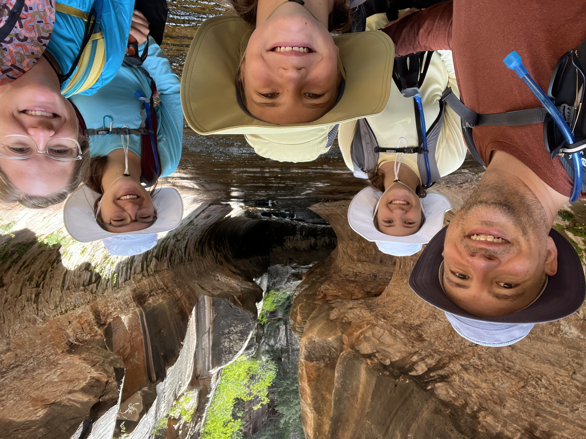
The water in this area continued down little cascades that had gotten incredibly slippery (I fell on my butt a couple times). Also in the stream bed were eroded “pots” with anywhere from three to five feet of depth filled with cold water. Easy to jump into, caution was still necessary because the entire park’s waterway system was filled with cyanobacteria. I never totally got a handle on how risky this was to my adult human self. I wasn’t sure if it could lead to paralysis or an upset stomach or something in between. So in order to avoid submerging my head, I didn’t jump in, but I definitely partook in the pools.

Two of my three daughters also pushed themselves to be adventurous. Not only did they test the pools, but they went with me to the waterfall at the end of the route. You could hear this waterfall echoing through The Subway, but it was not visible. To see the falls you had to travel through a series of five-foot-deep pools. The destination of that aforementioned Hawaii hike was a gloriously tall waterfall. I still regret that I did not hop in the pool of water at its base (safely away from the falls themselves, of course). So this time I promised myself I’d go check out these hidden falls.
We spent about an hour in total at The Subway, grabbing one more snack before we reluctantly started making our way back down the cascading falls. Still wearing my sandals, I stood in the bowl erosion feeling the water swirl around my feet. It was very zen.
Eventually we switched back into our boots and made steady progress toward the cliff-face exit. The day had started to get pretty hot, and the clouds weren’t quite as friendly as they had been that morning. We continued to drink water consistently (backpack water bladders are a must), took several breaks and watched our food intake. This was the first time hiking where I could tell that my steps were becoming sloppy and that meant I needed calories. As someone who feels pretty dis-attuned to my body, I thought this was pretty cool. Though I also was weirded out by it because the experience was probably the beginning stages of exposure, and exposure can lead to death. (I mean, it would take many, many hours of exposure, but still, death!)
We were happy to navigate ourselves pretty directly to the climbing-point that we were careful to mark on the map. After one more sandwich in our bellies and a long break on our legs, we started our ascent. It turned out that not only was the climb hard because of the height and heat, it also was at least as hard as going down in terms of scrambling. Many times we were on all fours making ourselves flat to avoid sliding backwards. I understand why most people rate the hike before the climbing exit a ten and rate the climb out a zero. Oof!
From the cliff top to our vehicle took much longer than we remembered it taking when we started the day, but we eventually arrived back at the safety of the parking lot. I was a little emotional after the hike. I was proud of the kids, and proud of the adults, too. In the moment I knew it was one of those grueling experiences that we would look back on with fond memories and it hit me a little.
From here we made our drive home and started mentally preparing ourselves for the tired, sore bodies that were sure to arrive tomorrow.
Day 5: Rest
Recently we went on a trip where a day of rest wasn't built it. It wasn't a trip we planned. And it was very hard to go, go, go with no break. So we knew after this big hiking day it would be good to have a day of rest.
So we did some shopping. We did some reading. We did some relaxing. We showed the kids Avatar for the first time. It was a good day.